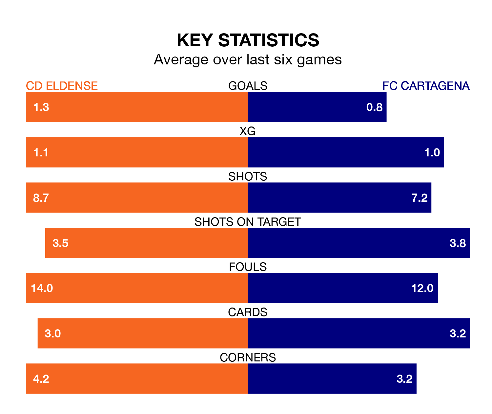

FC Cartagena travel to CD Eldense on late Friday in the Segunda División.
The visitors come into the game on the back of a defeat in their last match, having lost to Burgos CF 3-0 away.
Eldense, meanwhile, won their last match, 2-0 against Villarreal B, with their goals scored by Dario Dumić and Iván Chapela López.
With 38 goals in 29 games so far this season, Eldense are scoring more than average in the league with 1.3 goals per game. But they are conceding more than average too, letting in 37 goals at a rate of 1.3 per game.
Cartagena, meanwhile, are below average scorers, with 1.0 goal per game, compared to a league average of 1.1. They have conceded 1.4 goals per game.
The visitors are 18th in the table after 29 games, of which they have won eight and drawn seven, earning 31 points.
The home team are seven places ahead of Cartagena in 11th, with 10 wins and 11 draws putting them on 41 points.
Eldense's José Antonio Abad Martínez and Marc Mateu Sanjuán are among the league's most creative players, racking up six assists each so far this season, and holding third spot in the Segunda División's assist charts.
For Cartagena, Jairo Izquierdo González and Alfredo Ortuño Martínez have set up the most goals, having laid on three assists apiece to date.
Eldense are in reasonable form in the Segunda División, with three wins and two draws from their last six games.
With three wins and a draw over that period, the away side's form is slightly worse – they have taken 10 points from 18, compared to the hosts' 11.
Updated: 09:34 (UTC), 08/03/24